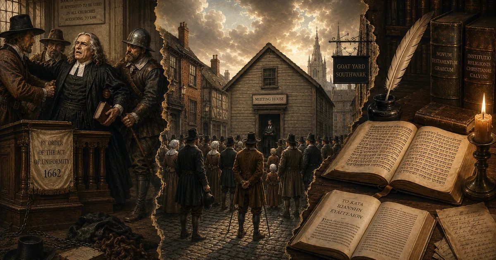

Коротко
Джон Гилл жил в эпоху, когда баптисты и другие диссентеры были гонимым меньшинством: Акты о единообразии (1662) и Корпоративный акт (1661) ограничивали их права.
Лондонский мир начала XVIII века — контраст между пуританской духовностью и растущим рационализмом, влиянием Просвещения и деизма.
Церковь Goat’s Yard (позже New Park Street Chapel) — одна из старейших баптистских церквей Лондона, основанная в 1650-х годах.
Книжная культура Гилла была не академической, а самообразовательной: он учился по еврейским текстам, мидрашам и трудам реформаторов без университетского диплома.
Понимание исторического контекста необходимо для оценки масштаба личности Гилла — он был пастором-учёным, а не кабинетным теоретиком.

Эта статья — не пересказ биографии Гилла, а её исторический фундамент. Её можно читать как самостоятельное введение в мир английских диссентеров XVII–XVIII веков. Прежде чем говорить о самом человеке, нужно увидеть среду, в которой ему пришлось взрослеть, учиться и проповедовать свои пятьдесят один год: законы, расколы, городскую нищету, книжную культуру и церковную уязвимость.
I. От пуритан к диссентерам: путь в полтора века
Когда в 1697 году в Кеттеринге родился Джон Гилл, английский нонконформизм уже прошёл путь длиной в почти полтора столетия. Этот путь начался не с баптистов, а с попытки очистить государственную церковь — и закончился созданием параллельной религиозной культуры со своими академиями, своими типографиями, своими кладбищами и даже своими кофейнями.

Хронология ключевых вех помогает увидеть, насколько недавним явлением были партикулярные баптисты к моменту, когда Гилл стал их пастором:
| Год | Событие | Значение для семьи Гилла |
|---|---|---|
| 1559 | Елизаветинское урегулирование | Учреждена государственная Англиканская церковь. Пуритане остаются внутри неё, добиваясь дальнейшей реформы. |
| 1608–1612 | Бегство сепаратистов в Голландию; рождение баптистов | Джон Смит и Томас Хелвис создают первую английскую баптистскую общину. Это генеральные баптисты с арминианским уклоном. |
| 1633–1644 | Рождение партикулярных баптистов | В Лондоне формируется реформатская баптистская традиция. В 1644 году семь общин подписывают Первое лондонское исповедание — деноминационная семья Гилла. |
| 1660–1662 | Реставрация Стюартов и Великое изгнание | Около 2000 пуританских пасторов выброшены из приходов. Нонконформизм становится постоянным явлением, а не «крылом» внутри церкви. |
| 1664 | Бенджамин Кич у позорного столба | Молодой партикулярный баптист Кич публично осуждён за катехизис для детей. Через 64 года Гилл займёт место его прямого преемника. |
| 1689 | Акт о веротерпимости | Диссентеры получают право молиться публично, но остаются гражданами второго сорта — без доступа к университетам и муниципальным должностям. |
| 1697 | Рождение Джона Гилла | Через 8 лет после получения частичной свободы. Гилл — первое поколение баптистов, выросшее без прямой угрозы тюрьмы. |
Важный нюанс: «диссентеры», «нонконформисты» и «баптисты » в исторических источниках часто употребляются как синонимы, но с юридической и экклезиологической точек зрения это три разных уровня идентификации.
1. Нонконформист (Nonconformist) — самый широкий термин. Это любой протестант в Англии, отказавшийся «сообразно» (conform) принять обряды и дисциплину государственной Англиканской церкви. Нонконформизмом можно было назвать даже личную позицию верующего, который не посещал храм, но и не создавал своей общины.
2. Диссентер (Dissenter) — термин более институциональный. Это тот, кто не просто не соглашался с государственным церковным устройством, но активно «отделился» (dissent), сформировав или присоединившись к альтернативной, законной или полузаконной религиозной общине (своей «церкви»).
3. Баптист (Baptist) — конкретная ветвь диссентерства. Это диссентер, который в дополнение к отделению от государства отвергал крещение младенцев (paedobaptism), настаивая на крещении только верующих (believer's baptism) по сознательному выбору. Гилл был всеми тремя сразу — и каждое из этих слов несло для него юридические, социальные и богословские последствия.
II. Партикулярные и генеральные баптисты: почему это важно
К началу XVIII века английские баптисты были разделены на две почти не пересекающиеся ветви. Это разделение определило богословскую идентичность Гилла, его круг общения и его полемических противников.
| Признак | Партикулярные баптисты | Генеральные баптисты |
|---|---|---|
| Богословие искупления | Особое (particular): Христос умер за избранных | Общее (general): Христос умер за всех |
| Корни | Английский сепаратизм + реформатская традиция | Английский сепаратизм + голландские меннониты |
| Исповедания | 1644 (Первое лондонское), 1689 (Второе лондонское) | 1660 (Стандарт Generals), позднее размылись |
| Судьба в XVIII в. | Стабильность доктрины; рост во второй половине века | Дрейф в унитарианство после 1719 года |
| Известные имена | Уильям Киффин, Бенджамин Кич, Джон Гилл, Джон Брайн, Эндрю Фуллер, Уильям Кэри | Томас Грантэм; к концу века деноминация почти исчезла |
Гилл был партикулярным баптистом не по семейной инерции, а по сознательному убеждению. В 1729 году он составит для своей общины в Хорслидауне знаменитую Goat’s Yard Declaration — двенадцатистатейное исповедание веры, которое будет ясно держать линию ортодоксальной реформатской теологии в эпоху, когда у соседей-генеральных баптистов как раз ломались стены тринитарного исповедания.
III. Тень 1662 года: Великое изгнание
Духовная родина Джона Гилла родилась за тридцать пять лет до его появления на свет. 24 августа 1662 года вошло в историю как «Чёрный Варфоломеев день». В этот день вступил в силу Акт о единообразии (Act of Uniformity), потребовавший от каждого английского пастора публичного и безоговорочного согласия с «Книгой общей молитвы» — англиканским литургическим сводом, восстановленным при Карле II. Около двух тысяч пуританских служителей — цвет английской учёности середины XVII века — отказались подчинить совесть государственному диктату и были изгнаны из своих приходов.
Среди изгнанных были такие имена, без которых сегодня немыслим протестантский канон: Ричард Бакстер, чьи «Призыв к необращённым» и «Реформированный пастор» войдут в библиотеку Гилла; Джон Флавел, чей «Промысл Божий — друг христианина» будет читаться у диссентеров целый век; Томас Уотсон, чьи проповеди станут классикой. Эти люди потеряли не только кафедру, но и право учить, право жить ближе пяти миль от родного города и часто — единственный источник дохода.

Это событие создало нонконформизм как постоянное явление. Пуритане перестали быть «фракцией внутри церкви» — они стали диссентерами вне её. Для семьи Гилла это было не предание старины, а ежедневная реальность: их община была наследницей тех самых «подпольных» собраний (conventicles), которые в 1660-х и 1670-х годах собирались под страхом штрафов и тюрьмы. Когда отец Гилла Эдвард приходил в собрание в Кеттеринге в 1690-х годах, он шёл в общину, чьи старики помнили, как их собирали по подвалам и сараям.
Гилл родился в первом поколении, для которого баптистское собрание уже было легально. Но память о страхе ещё была живой. Именно поэтому в его проповедях так часто звучит тема верности до конца — и именно поэтому он откажется от престижных приглашений в Бристоль или Лондон, если они означали бы малейший компромисс с государственной церковью.
IV. Кларендонский кодекс и позднейшие религиозные тесты
Даже после Акта о веротерпимости 1689 года диссентеры жили в тени правовой системы, начатой так называемым Кларендонским кодексом. В строгом смысле это четыре акта 1661–1665 годов; позднейший Test Act 1673 года не был частью этого кодекса, но расширил ту же логику религиозных тестов на гражданскую и военную службу. Веротерпимость 1689 года разрешила зарегистрированное богослужение, но не сняла социальную, образовательную и служебную стену.

| Закон | Год | Суть и эффект |
|---|---|---|
| Corporation Act | 1661 | Муниципальные должности и городское управление — только для тех, кто в течение года причащался по обряду Англиканской церкви. |
| Act of Uniformity | 1662 | Служители должны были публично подтвердить согласие с «Книгой общей молитвы»; отказ вёл к лишению кафедры. |
| Conventicle Act | 1664 | Собрания более пяти человек сверх семьи для богослужения вне англиканского чина объявлялись незаконными; повторные нарушения могли вести к транспортировке/ссылке. |
| Five Mile Act | 1665 | Изгнанным служителям запрещалось приближаться к прежним приходам и городам без требуемой присяги; ограничивалось и преподавание. |
| Test Act (позднейший религиозный тест) | 1673 | Гражданская и военная служба под Короной требовала присяги и причащения по англиканскому обряду; диссентеры оставались вне многих публичных должностей. |

Test Act и Corporation Act были официально отменены лишь в 1828 году — через 131 год после рождения Гилла и через 57 лет после его смерти. Всю свою жизнь и всё столетие после неё английский баптист оставался гражданином второго сорта: он не мог быть мэром, офицером, дипломатом, профессором Оксфорда или Кембриджа.
Именно поэтому Гилл не мог учиться в Оксфорде или Кембридже. До конца XVIII века двери элитного образования были закрыты для баптистов. Его невероятная эрудиция была продуктом того, что современники называли Suo Marte — «собственными силами», или, как точнее переводят, «своим Марсом» (своей войной за знание). Самостоятельно освоить иврит, греческий, сирийский и латынь, прочитать раввинистическую литературу в оригинале — это была не интеллектуальная роскошь, а ответ на системное исключение из академической жизни нации.
V. Диссентерские академии: университеты для изгнанных
Ответом диссентерского сообщества на закрытые двери Оксфорда и Кембриджа стало создание собственной образовательной инфраструктуры — диссентерских академий (dissenting academies). Это были частные школы повышенного уровня, где изгнанные пасторы преподавали богословие, латынь, греческий, философию и часто математику и натурфилософию — то есть фактически давали университетский курс без права присуждать университетские степени.
К концу XVII века возникла сеть таких академий, но её карта была подвижной: наставники переезжали, школы меняли адреса, а позднейшие историки иногда смешивали разные учреждения под одним названием. Например, академия Чарльза Мортона в Ньюингтон-Грин была связана с образованием Даниэля Дефо и Самуэля Уэсли; Исаака Уоттса источники осторожнее связывают с академией Томаса Роу, вероятно уже действовавшей в районе Мурфилдс. Важно не название на карте, а сам факт: диссентеры создавали параллельную образовательную инфраструктуру, потому что государственные университеты были закрыты для их совести.
Формальное образование Гилла оборвалось не из-за отсутствия способностей, а из-за конфессионального давления. Риппон пишет, что мальчик учился в грамматической школе примерно до одиннадцати лет, но отец забрал его, когда школьный мастер потребовал от детей диссентеров ходить на англиканские молитвы в будние дни. Попытка получить поддержку из лондонских фондов тоже не дала результата: попечители сочли его слишком молодым.
В 1717 году, как раз когда юный Гилл занимался самостоятельно в кеттерингской лавке, лондонские партикулярные баптисты основали Particular Baptist Fund — фонд поддержки служителей и преемственности служения. Образовательная помощь была частью этой заботы, но её не следует смешивать со всеми баптистскими академиями: Бристольская академия имела собственную линию Broadmead/Terrill/Bodenham и начала работу в 1720 году, тогда как линия Particular Baptist Fund позднее особенно связана со Stepney и Regent’s Park. Гилл увидел начало этой инфраструктуры, но сам стал «ходячим университетом» вне её стен.
VI. Солтерс-Холл (1719): доктринальный разлом
Когда Гилл, ещё совсем молодой кеттерингский ученик, только готовился к лондонскому пасторству, диссентерский мир потряс кризис, последствия которого определят его богословскую карьеру. В феврале 1719 года в лондонском зале Солтерс-Холл (Salters’ Hall) собрались более ста диссентерских служителей; решающее голосование дало 53 голоса за обязательную подписку и 57 против. Поводом стал спор в Эксетере: двух молодых пресвитерианских пасторов обвинили в арианстве — отрицании единосущия Сына Отцу.
Лондонское собрание должно было решить вопрос процедурный, но имеющий фундаментальные последствия: обязан ли каждый диссентерский служитель подписать декларацию о Троице, прежде чем его обвинят в ереси или защитят? Сторонники подписки видели в ней щит против ползучего рационализма. Противники подписки настаивали на «sola scriptura»: пусть Писание само себя защищает, а человеческие формулы не должны становиться тестом ортодоксии. Важно: отказ от обязательной подписки сам по себе ещё не равнялся отрицанию Троицы — среди non-subscribers были люди, считавшие себя ортодоксальными, но не желавшие делать человеческую формулу обязательным тестом.
| Конфессия | За подписку | Против обязательной подписки |
|---|---|---|
| Партикулярные баптисты | 14 пасторов | 2 пастора |
| Генеральные баптисты | 1 пастор | 14 пасторов |
| Индепенденты (конгрегационалисты) | большинство | меньшинство |
| Пресвитериане | меньшинство | большинство |
| ИТОГО | 53 | 57 |
Итог голосования шокировал ортодоксов: 57 против обязательной подписки, 53 за. Решение было символическое — никого ни к чему не принуждали, — но историческое значение огромно. Позднее эту победу non-subscription передавали формулой «Библия победила с перевесом в четыре голоса» (The Bible carried it by four). Историки, однако, предупреждают: эта фраза дошла как позднейший рассказ и не должна превращаться в стенографическую цитату участника, выходящего из зала.
Но за этой риторической победой sola scriptura стояла иная реальность. Хотя не всякий противник подписки был арианином или унитарием, сама логика отказа от публичного тринитарного теста делала институциональную защиту ортодоксии слабее. В течение XVIII века значительная часть английского пресвитерианства постепенно дрейфовала через арианство к открытому унитарианству. Сходная опасность коснулась и генеральных баптистов: к концу века их старые структуры были глубоко поражены антитринитарным дрейфом.
Партикулярные баптисты, к которым принадлежал Гилл, сохранили верность ортодоксии: четырнадцать к двум. Гилл пришёл в Хорслидаун в 1720 году, всего через год после Солтерс-Холла, когда рана этого раскола ещё кровоточила. Его бескомпромиссная защита Троицы в The Doctrine of the Trinity Stated and Vindicated (1731) и в позднейшем «Своде догматического богословия» — не отвлечённое умозрение, а прямой ответ на дрейф соседей. Без Солтерс-Холла невозможно понять, почему Гилл всю жизнь так упорно пишет о вечном рождении Сына и личности Святого Духа.
VII. Кофейная политика
Поскольку диссентеры по закону не могли иметь епископата, синодов или официальных центральных структур, управление их жизнью переместилось в самое демократичное место лондонского XVIII века — в кофейни. К 1720-м годам в Лондоне было около пятисот кофеен, и каждая профессия имела свою: страховщики собирались у Ллойда, литераторы — у Уилла, политики-виги — у «Сент-Джеймса».
У партикулярных баптистов было своё место — Hanover Coffee House близ Лондонского моста, а позднее British Coffee House. Там встречались лондонские пасторы, обсуждали богословские книги, согласовывали кандидатов в рукоположение, мирили спорящие общины и собирали деньги на бедных собратьев в провинции. Это была неформальная, но влиятельная сеть — то, что современный историк Джордж Элле назовёт «Coffee House Association».
Гилл, будучи убеждённым конгрегационалистом, относился к этой неформальной иерархии настороженно. Его богословие поместной церкви настаивало: окончательное решение о членстве, дисциплине и рукоположении принадлежит общине, а не группе столичных пасторов, пусть и собравшейся в уважаемом месте. В 1729 году, когда Гилла приглашали на самостоятельное пасторство в Хорслидаун, формальную процедуру рукоположения возглавили старшие лондонские пасторы — и именно тогда было видно, что Гилл умеет принимать собратство, но не подчиняется его власти.
Кофейня для Гилла была местом разговора, а не управления. Сама же церковь, по его убеждению, должна была управляться собой — и эта линия стала постоянной нотой его богословия церкви.

VIII. Саутварк: джин, дым и Евангелие
Чтобы понять, кому Гилл проповедовал полвека, нужно представить себе Саутварк — район южного берега Темзы, лежащий прямо напротив Сити. Это не был аристократический Лондон гравюр Хогарта с напудренными париками; это был промышленный южный берег, мир кожевенников, дубильщиков, портовых рабочих, моряков, шляпников и пивоваров. Воздух Хорслидауна был густым от угольного дыма и запаха дубильных ям; над крышами стоял туман от Темзы; в переулках свирепствовала «джиновая лихорадка» (Gin Craze) 1720-х–1750-х годов.
«Джиновая лихорадка» была не локальной легендой Саутварка, а общелондонским социальным кризисом дешёвого спирта, бедности и уличной торговли. Поэтому речь здесь должна идти не о точной локальной статистике вроде «двух миллионов галлонов в Саутварке», а о более широком городском фоне: в переулках южного берега дешёвый джин, нерегулируемые лавки, нищета и детская смертность были частью той же пастырской реальности, в которой Гилл проповедовал и наставлял общину. Гравюра Хогарта Gin Lane стала символом этого кризиса, но её не следует топографически привязывать к Саутварку без отдельного источника.

Гилл служил в этой гуще жизни. Его община в Хорслидауне, известная как «Goat’s Yard» (Козий двор) — по названию переулка, где стояла часовня, — была одной из крупнейших партикулярно-баптистских церквей Лондона. К моменту, когда Гилл стал её пастором в 1720 году, она была примерно в три раза больше средней лондонской диссентерской общины. В 1757 году она переехала в новое, ещё бо́льшее здание на Carter Lane (Картер-Лейн), вблизи Тули-Стрит — и это здание станет местом, откуда позднее, через две смены пасторов, вырастет знаменитый Metropolitan Tabernacle Сперджена.
Совсем рядом, через мост в сторону южных полей, простирался Кеннингтон-Коммон — пустошь, где совершались публичные казни, проходили крикетные матчи и где гремело Великое пробуждение. С 1739 года Джордж Уайтфилд собирал здесь толпы по тридцать тысяч человек. Гилл и Уайтфилд проповедовали в одном городе и в одно и то же десятилетие; они почти наверняка слышали друг о друге каждую неделю. Но публично Гилл предпочитал говорить о Евангелии, а не о методистах: его задачей было сохранить церковь, а не возглавить движение.
IX. Кеттеринг и книжная лавка

Когда формальное образование закрылось, Гилл нашёл свой университет — в местной книжной лавке. Кеттерингская поговорка тех лет: «Это так же верно, как то, что Джон Гилл в книжной лавке» (It’s as sure as John Gill is at the bookseller’s) — была не похвалой и не насмешкой, а простым описанием. Молодой Гилл проводил в лавке столько времени, что его местонахождение использовали как мерило достоверности.
Лавка открывалась только по рыночным дням — два раза в неделю. Это были его еженедельные «лекции»: Гилл прочёсывал свежие поступления, торговался за грамматику Буксторфа, выпрашивал у владельца разрешения посмотреть редкие тома. Когда отец Эдвард мог оторвать сына от станка в собственной сукновальне, тот шёл туда же — к книгам.
К пятнадцати годам Гилл, по свидетельству ранних биографов, читал на иврите, греческом и латыни. Это не было обычным для сына кеттерингского ремесленника — это было обычным для выпускника Оксфорда. Двери академии перед ним были закрыты, но книжная лавка их открыла. Когда в 1719 году семнадцатилетний Гилл начал проповедовать как кандидат, а в 1720-м был приглашён в Лондон, у него уже была собственная библиотека и собственная программа исследования — то, что в академии назвали бы independent study.
Гилл превратил свою изоляцию в преимущество. Не имея обязательного университетского курса, он не имел и его шор: его богословие выросло не из лекционных тетрадей, а из прямого чтения отцов Церкви, реформаторов и раввинистических комментариев в оригинале. К концу жизни его библиотека была одной из крупнейших частных коллекций в Лондоне, а его «Свод догматического богословия» опирался на сотни прямых цитат из иудейских и раннехристианских источников — там, где английские современники цитировали из вторых рук.
X. Итог: пастор изгнанников, защитник Троицы, учёный с улицы
Поэтому, переходя к собственно биографии — к Кеттерингу, Лондону, Хорслидауну, комментарию и «Своду богословия», — важно помнить не только даты, но и давление среды. Гилл не просто писал книги в тишине. Он отвечал на вызовы своего века и старался сохранить для своей общины то, что считал не человеческой традицией, а хрупким наследием истины.
Источниковая опора исторического фона
Фон английского диссентерства проверялся по законодательным текстам эпохи и по источникам, связанным с самим Гиллом; популярные пересказы здесь не являются основанием аргумента.